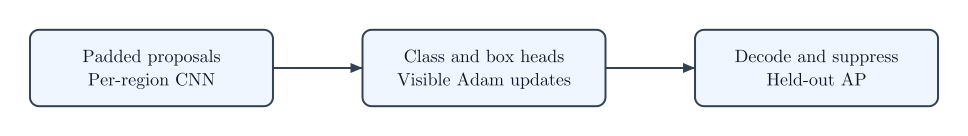
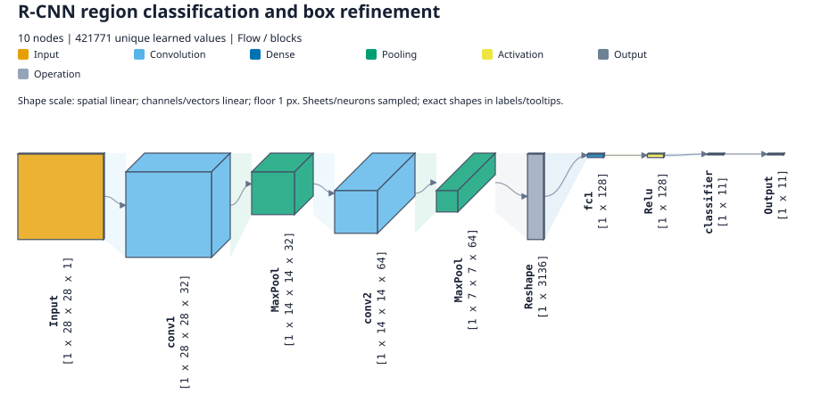
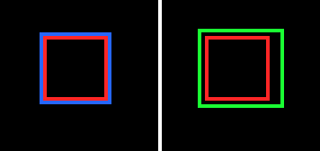
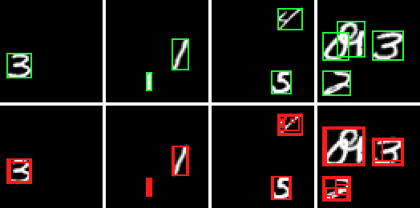
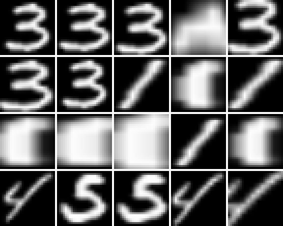
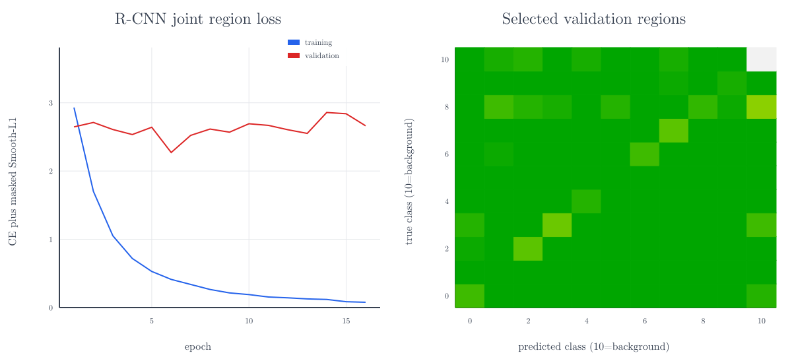
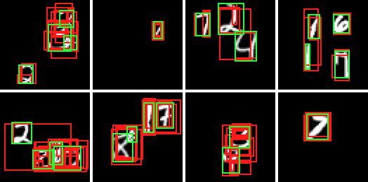
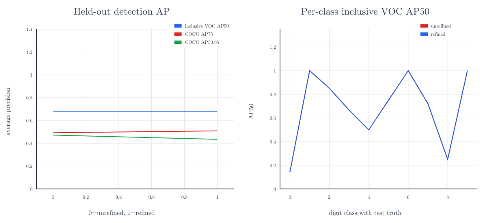

R-CNN region classification and box refinement
Abstract
Proposed object regions can recognize the right object while locating its edges poorly. This report fits a tensor patch CNN with class-specific box regression, showing padded warps, assignment masks and the complete Adam loop, then measures the same held-out predictions with and without learned refinement.
Source example: examples/cpp/source/nn/1_convolutional_neural_networks/1.6_object_detection/rcnn.cpp.
The method
R-CNN computes convolutional features separately for each proposed image patch. Classification identifies the object; a class-specific four-coordinate regressor corrects the proposal. The source teaching adaptation jointly learns softmax and regression heads on compact MNIST scenes rather than reproducing the original pretrained CNN/SVM/ridge pipeline.
The concept diagram below is drawn by dm::graphics::Diagram. Its editable C++
source is the complete block below; regeneration uses the same datamunge toolchain
as the numerical examples. Exports consume the saved local SVG.
#include <dm/dm.hpp>
int main() {
std::filesystem::create_directories("build");
dm::graphics::Diagram diagram;
diagram.node("n0", {0.0, 0}, "Padded proposals\nPer-region CNN");
diagram.node("n1", {5.2, 0}, "Class and box heads\nVisible Adam updates");
diagram.node("n2", {10.4, 0}, "Decode and suppress\nHeld-out AP");
diagram.edge("n0", "n1").edge("n1", "n2");
diagram.save_svg("build/rcnn_concept.svg");
}
Executed tensor architecture
This figure executes the inference configuration shown in the code, using a zero-valued shape probe without fitting or loading a checkpoint. Named stage boundaries group whole subgraphs where available; other nodes retain functional-layer detail. Exact batch-inclusive shapes and reachable parameter totals come from the trace. Shared linear scales map spatial dimensions and channel counts to blocks; the one-pixel visibility floor is disclosed in the legend. Labels use compact monospace text, rotate counterclockwise and sit beside their own glyphs. Arrows flow left to right; wide diagrams scroll at native size on the website.
#include <dm/dm.hpp>
int main() {
namespace n = dm::nn;
namespace m = n::models;
n::set_num_threads(2);
std::filesystem::create_directories("build");
n::models::DetectionSceneConfig cfg;
n::ParameterStore p(17);
cfg.scenes = 80;
cfg.seed = 11;
n::Module architecture_model(
[&](const n::Tensor& image) { return n::models::RcnnPatchHead(p, image).logits; },
"R-CNN region classification and box refinement");
n::ModelPlotOptions options;
options.style = n::ModelPlotStyle::Flow;
options.detail = n::ModelPlotDetail::Blocks;
options.labels = {.type = n::ModelPlotLabel::NameAndShape, .size = 12, .wrap = 24};
options.spacing = {.layer = 24, .lane = 12, .label = 8, .margin = 20};
options.sizing.spatial_size = 96;
options.sizing.channel_size = 42;
options.sizing.minimum_extent = 1;
options.opacity = .8;
const auto diagram = architecture_model.plot(n::zeros({1, 28, 28, 1}), options);
diagram.save_svg("build/rcnn_architecture.svg");
std::print(
"{} displayed nodes; {} reachable learned values.\n",
diagram.nodes().size(),
diagram.parameter_count());
}10 displayed nodes; 421771 reachable learned values.

Simple example: encode, pad and recover a tight box
Let a proposal have centre (ay,ax) and extent (ah,aw), and its target have
(by,bx,bh,bw). Encoding gives dy=(by-ay)/(.1*ah),
dx=(bx-ax)/(.1*aw), dh=log(bh/ah)/.2, dw=log(bw/aw)/.2.
Decoding adds centre offsets and exponentiates size offsets; the core clips
log scales above 4. The fixture lies inside that clipping region, so known
target offsets recover the target to rounding precision.
For classification, R-CNN pads each proposal by seven percent of its own height and width on every side. It then warps the padded rectangle anisotropically to 28x28. This differs from the baseline's enlarged square crop. The plotted refinement below uses known target offsets, not a fitted prediction; the actual learned regression comparison comes after training.
#include <dm/dm.hpp>
int main() {
namespace n = dm::nn;
namespace m = n::models;
const auto a = n::from_vector(std::vector<double>{10, 12, 28, 30}, {1, 4}),
target = n::from_vector(std::vector<double>{8, 10, 30, 34}, {1, 4});
const auto offsets = n::encode_boxes(a, target), recovered = n::decode_boxes(a, offsets),
padded = m::PadDetectionBoxes(a, .07);
const double error = n::max(n::abs(recovered - target)).item();
if (error > 1e-12)
return 1;
const auto canvas = n::zeros({1, 42, 44, 1}, a.dtype());
const auto plain = m::DrawDetectionBoxes(canvas, {a}, {1, .15, .15}),
with_padding = m::DrawDetectionBoxes(canvas, {padded}, {.15, .4, 1.}),
exact = m::DrawDetectionBoxes(canvas, {recovered}, {.1, 1, .2});
const auto background = n::zeros({1, 42, 44, 3}, a.dtype());
const auto first = n::maximum(plain, with_padding), second = n::maximum(plain, exact);
std::filesystem::create_directories("build");
n::save_image_grid(n::concat({first, second}, 0), "build/rcnn_coding.png", 2, 0., 1., 4, 1.,
4);
std::print(
"Known dy/dx/dh/dw: {:.6f}, {:.6f}, {:.6f}, {:.6f}; decoding maximum error {:.12f}. "
"Left red proposal/blue padded crop; right red proposal/green known target.\n",
offsets.at({0, 0}), offsets.at({0, 1}), offsets.at({0, 2}), offsets.at({0, 3}), error);
}Known dy/dx/dh/dw: 0.000000, 0.555556, 1.003353, 1.438410; decoding maximum error 0.000000000000. Left red proposal/blue padded crop; right red proposal/green known target.

Data: proposals, tight targets and warped regions
This bounded run uses the same 80 generated 64-pixel scenes as the baseline: the first 2048 official training digits, seed 11, with 64 fit and 16 validation scenes. Eight test scenes use the first 512 official test digits, seed 22. Connected-component proposals use stricter byte thresholds 48, 64, 96, 128, 160, 200 and 230, plus nearby component-pair unions. These often crop away faint edge pixels, creating a reason to learn box refinement. Touching digits may still remain merged. All image and box arithmetic uses tensors.
#include <dm/dm.hpp>
int main() {
namespace n = dm::nn;
namespace m = n::models;
n::set_num_threads(2);
std::filesystem::path cache;
if (const auto *p = std::getenv("DATAMUNGE_DATA_DIR"))
cache = p;
else if (const auto *p = std::getenv("XDG_CACHE_HOME"))
cache = std::filesystem::path(p) / "datamunge/datasets";
else
cache = std::filesystem::path(std::getenv("HOME")) / ".cache/datamunge/datasets";
dm::datasets::fetch("mnist", (cache / "mnist").string());
const auto train = n::load_mnist((cache / "mnist").string(), "train");
n::models::DetectionSceneConfig cfg;
cfg.scenes = 80;
cfg.seed = 11;
const auto scenes = n::models::MakeTensorDetectionScenes(
n::slice_axis(train.images, 0, 0, 2048), n::slice_axis(train.labels, 0, 0, 2048), cfg);
const auto images = n::slice_axis(scenes.images, 0, 0, 4);
std::vector<n::Tensor> truth(scenes.boxes.begin(), scenes.boxes.begin() + 4), proposals;
for (int image = 0; image < 4; ++image)
proposals.push_back(m::ComponentDetectionProposals(
n::slice_axis(images, 0, image, image + 1).reshape({64, 64, 1}),
{48, 64, 96, 128, 160, 200, 230}, 3));
std::filesystem::create_directories("build");
n::save_image_grid(n::concat({m::DrawDetectionBoxes(images, truth, {.1, 1, .2}),
m::DrawDetectionBoxes(images, proposals, {1, .1, .1})},
0),
"build/rcnn_proposals.png", 4, 0., 1., 4, 1., 2);
std::print("Top: first four training scenes with green truth boxes. Bottom: identical "
"pixels with all tight-threshold red proposals, including pair unions.\n");
}Top: first four training scenes with green truth boxes. Bottom: identical pixels with all tight-threshold red proposals, including pair unions.

Each training scene contributes every proposal followed by every ground-truth box. Maximum IoU selects the target, with first-target tie breaking. IoU at least .5 gives its digit label; lower overlap means background class 10. Regression uses only candidates reaching .6. Thus a region can be a foreground classification example while its regressor is masked out. Appended truth boxes provide exact positive examples with zero target offsets. Background and masked-out regression targets are zero. The sampler performs no optimization or class balancing.
#include <dm/dm.hpp>
int main() {
namespace n = dm::nn;
namespace m = n::models;
n::set_num_threads(2);
std::filesystem::path cache;
if (const auto *p = std::getenv("DATAMUNGE_DATA_DIR"))
cache = p;
else if (const auto *p = std::getenv("XDG_CACHE_HOME"))
cache = std::filesystem::path(p) / "datamunge/datasets";
else
cache = std::filesystem::path(std::getenv("HOME")) / ".cache/datamunge/datasets";
dm::datasets::fetch("mnist", (cache / "mnist").string());
const auto train = n::load_mnist((cache / "mnist").string(), "train");
n::models::DetectionSceneConfig cfg;
cfg.scenes = 80;
cfg.seed = 11;
const auto scenes = n::models::MakeTensorDetectionScenes(
n::slice_axis(train.images, 0, 0, 2048), n::slice_axis(train.labels, 0, 0, 2048), cfg);
std::vector<std::int64_t> rows(64);
std::iota(rows.begin(), rows.end(), 0);
const auto samples = m::MakeRcnnTrainingSamples(scenes, rows);
n::save_image_grid(n::slice_axis(samples.images, 0, 0, 20), "build/rcnn_patches.png", 5, 0.,
1., 4, 1., 4);
std::print("{} warped fit regions; {} foreground labels, {} eligible regressions. First "
"twenty labels:",
samples.labels.numel(), n::count_nonzero(n::less(samples.labels, 10.)).item(),
n::count_nonzero(samples.mask).item());
for (auto label : n::slice_axis(samples.labels, 0, 0, 20).to_vector<int>())
std::print(" {}", label);
std::print(".\n");
}938 warped fit regions; 664 foreground labels, 596 eligible regressions. First twenty labels: 3 3 3 10 3 3 3 1 1 1 1 1 10 1 1 4 5 5 4 10.

Explicit joint classifier and box-regressor optimization
The compact patch network has two 3x3 ReLU convolutions of widths 32/64 with 2x2 pools, a 128-unit dense ReLU, eleven class scores and ten class-specific four-offset regressors: 426931 learned scalars. It computes a CNN pass per region. There is no batch norm, moving state or hidden pretraining. The source adaptation uses softmax and a jointly learned box head in place of the paper's SVMs and separate ridge regression.
For label y, mask m and target offsets t, the loss is mean class cross-entropy
plus sum(m*sum(SmoothL1(delta_y-t)))/max(sum(m),1). Background has no selected
regressor. Smooth-L1 is .5*d² for absolute error below one and abs(d)-.5
otherwise. The loop adds .00005*sum(kernel²), excluding biases. Adam uses .001,
batch 32 and sixteen epochs. All leaves are created before constructing Adam.
Validation selects the lowest *combined* classification/regression loss; the
original short source run reports its final epoch, so validation selection is an
explicit teaching-run addition. No test scenes enter selection.
#include <dm/dm.hpp>
int main() {
namespace n = dm::nn;
n::set_num_threads(2);
std::filesystem::path cache;
if (const auto *p = std::getenv("DATAMUNGE_DATA_DIR"))
cache = p;
else if (const auto *p = std::getenv("XDG_CACHE_HOME"))
cache = std::filesystem::path(p) / "datamunge/datasets";
else
cache = std::filesystem::path(std::getenv("HOME")) / ".cache/datamunge/datasets";
dm::datasets::fetch("mnist", (cache / "mnist").string());
const auto train = n::load_mnist((cache / "mnist").string(), "train");
n::models::DetectionSceneConfig cfg;
cfg.scenes = 80;
cfg.seed = 11;
const auto scenes = n::models::MakeTensorDetectionScenes(
n::slice_axis(train.images, 0, 0, 2048), n::slice_axis(train.labels, 0, 0, 2048), cfg);
std::vector<std::int64_t> fit_rows(64), validation_rows(16);
std::iota(fit_rows.begin(), fit_rows.end(), 0);
std::iota(validation_rows.begin(), validation_rows.end(), 64);
const auto fit = n::models::MakeRcnnTrainingSamples(scenes, fit_rows),
validation = n::models::MakeRcnnTrainingSamples(scenes, validation_rows);
const auto x = 2. * fit.images - 1., vx = 2. * validation.images - 1.;
n::ParameterStore p(17);
{
n::NoGradGuard guard;
n::models::RcnnPatchHead(p, n::zeros({1, 28, 28, 1}));
}
if (p.count() != 426931)
return 1;
n::OptimizerConfig config;
config.kind = n::OptimizerKind::Adam;
n::Optimizer adam(p, .001, config);
n::BatchOrder order(std::size_t(fit.labels.numel()), 32, 29);
std::vector<n::Tensor> kernels;
for (const auto &value : p.parameters())
if (value.dim() >= 2)
kernels.push_back(value);
std::filesystem::create_directories("build");
const std::string checkpoint = "build/rcnn_best.npz";
std::vector<double> epochs, training, validation_nll;
double best = std::numeric_limits<double>::infinity();
int selected = 0, steps = 0;
std::print("| epoch | fit joint loss | validation joint loss |\n|---:|---:|---:|\n");
for (int epoch = 1; epoch <= 16; ++epoch) {
order.begin_epoch();
double total = 0;
std::size_t seen = 0;
for (auto rows = order.next(); !rows.empty(); rows = order.next()) {
const auto index = n::from_vector(rows);
const auto logits = n::models::RcnnPatchHead(p, n::gather(x, index));
const auto ce = n::models::DetectionRoiLoss(logits, n::gather(fit.labels, index),
n::gather(fit.targets, index),
n::gather(fit.mask, index));
n::Tensor penalty = n::zeros({});
for (const auto &kernel : kernels)
penalty = penalty + n::sum(n::square(kernel));
total += ce.item() * rows.size();
seen += rows.size();
adam.minimize(ce + .00005 * penalty);
++steps;
}
n::NoGradGuard guard;
const auto loss =
n::models::DetectionRoiLoss(n::models::RcnnPatchHead(p, vx), validation.labels,
validation.targets, validation.mask);
epochs.push_back(epoch);
training.push_back(total / double(seen));
validation_nll.push_back(loss.item());
if (loss.item() < best) {
best = loss.item();
selected = epoch;
p.save(checkpoint);
}
std::print("| {} | {:.6f} | {:.6f} |\n", epoch, training.back(), validation_nll.back());
}
p.load(checkpoint);
n::NoGradGuard guard;
const auto logits = n::models::RcnnPatchHead(p, vx);
const auto restored = n::models::DetectionRoiLoss(logits, validation.labels,
validation.targets, validation.mask);
if (!std::isfinite(best) || std::abs(restored.item() - best) > 1e-6 ||
training.back() >= training.front())
return 1;
const auto predicted = n::argmax(logits.logits, 1);
const double accuracy =
n::mean(n::equal(predicted, validation.labels).to(n::DType::Float32)).item();
const auto confusion = n::matmul(n::transpose(n::one_hot(validation.labels, 11), {1, 0}),
n::one_hot(predicted, 11));
auto curve = dm::graphics::RPlot::create();
curve.lines(epochs, training, "training", {37, 99, 235})
.lines(epochs, validation_nll, "validation", {220, 38, 38})
.title("R-CNN joint region loss")
.x_label("epoch")
.y_label("CE plus masked Smooth-L1")
.y_limits(
0, 1.3 * std::max(*std::max_element(training.begin(), training.end()),
*std::max_element(validation_nll.begin(), validation_nll.end())));
auto counts = n::plot_tensor_map(n::reverse(confusion, {0}), 0, n::max(confusion).item());
counts.title("Selected validation regions")
.x_label("predicted class (10=background)")
.y_label("true class (10=background)")
.x_limits(-.5, 10.5)
.y_limits(-.5, 10.5);
dm::graphics::RLayout::create(1, 2)
.add(curve)
.add(counts)
.size(1200, 550)
.fit_panels()
.save_svg("build/rcnn_training.svg");
std::print(
"{} learned scalars, {} Adam updates; selected epoch {}, validation joint loss {:.6f}, "
"region accuracy {:.6f} on {} patches. No moving model state.\n",
p.count(), steps, selected, best, accuracy, validation.labels.numel());
}| epoch | fit joint loss | validation joint loss |
|---|---|---|
| 1 | 2.930474 | 2.646573 |
| 2 | 1.701279 | 2.711715 |
| 3 | 1.051048 | 2.608456 |
| 4 | 0.719301 | 2.534679 |
| 5 | 0.529039 | 2.641642 |
| 6 | 0.412478 | 2.271555 |
| 7 | 0.338686 | 2.522175 |
| 8 | 0.264927 | 2.615277 |
| 9 | 0.214730 | 2.569454 |
| 10 | 0.190094 | 2.692607 |
| 11 | 0.154787 | 2.669146 |
| 12 | 0.142689 | 2.605243 |
| 13 | 0.126869 | 2.551501 |
| 14 | 0.118790 | 2.857951 |
| 15 | 0.085568 | 2.839404 |
| 16 | 0.077479 | 2.662877 |
426931 learned scalars, 480 Adam updates; selected epoch 6, validation joint loss 2.271555, region accuracy 0.578680 on 197 patches. No moving model state.

The fit has 938 regions: 664 foreground labels and 596 regression-eligible examples. Sixteen epochs make 480 Adam updates. Validation selects epoch 6 with combined loss 2.293463 and region accuracy 0.583756 on 197 regions. The checkpoint criterion is joint loss, so it need not select the epoch with best detection AP. Later epochs do not replace this selected checkpoint.
Held-out localization with and without learned regression
Both evaluations use exactly the same proposals, crop probabilities, selected checkpoint and score/NMS settings. The first reports original candidate boxes; the second decodes each class's learned offsets before NMS. Neither boxes nor offsets are clipped, preserving the source. Every digit class scoring above .05 is considered. NMS uses .3 within each image/class, then a budget of 100 per image. The synthetic inclusive VOC AP50 convention is requested explicitly; AP75 and AP50:95 use the COCO-style 101-point rule. No real VOC/COCO images are involved.
#include <dm/dm.hpp>
int main() {
namespace n = dm::nn;
namespace m = n::models;
n::set_num_threads(2);
n::NoGradGuard guard;
std::filesystem::path cache;
if (const auto *p = std::getenv("DATAMUNGE_DATA_DIR"))
cache = p;
else if (const auto *p = std::getenv("XDG_CACHE_HOME"))
cache = std::filesystem::path(p) / "datamunge/datasets";
else
cache = std::filesystem::path(std::getenv("HOME")) / ".cache/datamunge/datasets";
dm::datasets::fetch("mnist", (cache / "mnist").string());
const auto digits = n::load_mnist((cache / "mnist").string(), "test");
m::DetectionSceneConfig cfg;
cfg.scenes = 8;
cfg.seed = 22;
const auto scenes = m::MakeTensorDetectionScenes(
n::slice_axis(digits.images, 0, 0, 512), n::slice_axis(digits.labels, 0, 0, 512), cfg);
n::ParameterStore p(17);
m::RcnnPatchHead(p, n::zeros({1, 28, 28, 1}));
p.load("build/rcnn_best.npz");
std::vector<m::DetectionEvaluationTruth> truth;
std::vector<int> ids(8);
std::iota(ids.begin(), ids.end(), 0);
for (int image : ids) {
const auto b = n::boxes_to_vector(scenes.boxes[image]);
const auto labels = scenes.labels[image].to_vector<int>();
for (std::size_t j = 0; j < b.size(); ++j)
truth.push_back({image, labels[j], b[j]});
}
std::vector<double> ap50, ap75, coco_ap, candidates, recall50, recall70;
std::vector<double> class_x, before, after;
for (bool regression : {false, true}) {
std::vector<n::Tensor> cropped, reported;
std::vector<std::int64_t> rows;
double covered50 = 0, covered70 = 0;
for (int image : ids) {
const auto boxes = m::ComponentDetectionProposals(
n::slice_axis(scenes.images, 0, image, image + 1).reshape({64, 64, 1}),
{48, 64, 96, 128, 160, 200, 230}, 3);
cropped.push_back(m::PadDetectionBoxes(boxes, .07));
reported.push_back(boxes);
for (std::int64_t j = 0; j < boxes.shape()[0]; ++j)
rows.push_back(image);
if (scenes.boxes[image].shape()[0] && boxes.shape()[0]) {
const auto best = n::max(n::box_iou(boxes, scenes.boxes[image]), {0});
covered50 += n::count_nonzero(n::greater_equal(best, .5)).item();
covered70 += n::count_nonzero(n::greater_equal(best, .7)).item();
}
}
const auto boxes = n::concat(reported, 0), crop_boxes = n::concat(cropped, 0),
source = n::from_vector(rows);
std::vector<n::Tensor> probabilities, deltas;
for (std::int64_t start = 0; start < source.numel(); start += 128) {
const auto end = std::min(start + 128, source.numel());
const auto patch =
m::CropDetectionPatches(scenes.images, n::slice_axis(source, 0, start, end),
n::slice_axis(crop_boxes, 0, start, end));
const auto head = m::RcnnPatchHead(p, 2. * patch - 1.);
probabilities.push_back(head.probabilities);
deltas.push_back(head.deltas);
}
const auto prob = n::concat(probabilities, 0);
const auto B = source.numel();
const auto scores = n::slice_axis(prob, 1, 0, 10).reshape({B * 10});
const auto all_boxes =
(regression ? n::decode_boxes(boxes.reshape({B, 1, 4}), n::concat(deltas, 0))
: (boxes.reshape({B, 1, 4}) * n::ones({B, 10, 1})))
.reshape({B * 10, 4});
const auto classes = (n::arange(0, 10).to(n::DType::Int64).reshape({1, 10}) *
n::ones({B, 10}, n::DType::Int64))
.reshape({B * 10});
const auto images =
(source.reshape({B, 1}) * n::ones({B, 10}, n::DType::Int64)).reshape({B * 10});
const auto detections =
m::SuppressDetectionCandidates(all_boxes, scores, classes, images, .3, .05, 100);
const auto records = m::DetectionEvaluationRecords(detections);
const auto voc = m::EvaluateDetectionDataset(records, truth, ids, false, true),
coco = m::EvaluateDetectionDataset(records, truth, ids, true);
// Preserve the exact evaluated boxes and scores for an independent AP recount.
std::vector<double> saved_predictions, saved_truth;
for(const auto& detection:records){saved_predictions.insert(saved_predictions.end(),{double(detection.image),double(detection.label),double(detection.score),double(detection.box[0]),double(detection.box[1]),double(detection.box[2]),double(detection.box[3])});}
for(const auto& target:truth){saved_truth.insert(saved_truth.end(),{double(target.image),double(target.label),double(target.box[0]),double(target.box[1]),double(target.box[2]),double(target.box[3]),double(target.difficult),double(target.crowd)});}
n::save_npz("build/rcnn_detections_"+std::to_string(regression ? 1 : 0)+".npz",{{"predictions",n::from_vector(saved_predictions,{std::int64_t(records.size()),7})},{"truth",n::from_vector(saved_truth,{std::int64_t(truth.size()),8})},{"images",n::from_vector(ids)},{"metrics",n::stack({voc.ap50,coco.ap75,coco.ap},0)}});
for (const auto &[label, ap] : voc.per_class50) {
if (regression)
after.push_back(ap.item());
else {
class_x.push_back(label);
before.push_back(ap.item());
}
}
ap50.push_back(voc.ap50.item());
ap75.push_back(coco.ap75.item());
coco_ap.push_back(coco.ap.item());
candidates.push_back(double(B) / 8.);
recall50.push_back(covered50 / truth.size());
recall70.push_back(covered70 / truth.size());
std::print("{}: {:.3f} candidates/image, proposal recall .5/.7 {:.6f}/{:.6f}; inclusive "
"VOC AP50 {:.6f}, COCO AP75 {:.6f}, AP50:95 {:.6f}; {} retained detections.\n",
regression ? "refined" : "unrefined", candidates.back(), recall50.back(),
recall70.back(), ap50.back(), ap75.back(), coco_ap.back(), records.size());
if (regression) {
std::vector<n::Tensor> boxes_by_image;
const auto image_ids = detections.images.to_vector<int>();
for (int image = 0; image < 8; ++image) {
std::vector<std::int64_t> selected;
for (std::size_t j = 0; j < image_ids.size(); ++j)
if (image_ids[j] == image)
selected.push_back(std::int64_t(j));
boxes_by_image.push_back(n::gather(detections.boxes, n::from_vector(selected)));
}
const auto annotated = m::DrawDetectionBoxes(scenes.images, scenes.boxes, {.1, 1., .2});
// Drawing accepts grayscale; compose predicted red outlines on the raw image,
// then keep green truth outlines where they differ from grayscale.
const auto predicted =
m::DrawDetectionBoxes(scenes.images, boxes_by_image, {1., .1, .1});
const auto raw = scenes.images * n::ones({1, 1, 1, 3});
const auto truth_mask = n::any(n::not_equal(annotated, raw), {3}, true);
n::save_image_grid(n::where(truth_mask, annotated, predicted),
"build/rcnn_detections.png", 4, 0., 1., 4, 1., 2);
}
}
auto metrics = dm::graphics::RPlot::create();
metrics.lines({0, 1}, ap50, "inclusive VOC AP50", {37, 99, 235})
.lines({0, 1}, ap75, "COCO AP75", {220, 38, 38})
.lines({0, 1}, coco_ap, "COCO AP50:95", {22, 163, 74})
.title("Held-out detection AP")
.x_label("0=unrefined, 1=refined")
.y_label("average precision")
.x_limits(-.1, 1.1)
.y_limits(0, 1.4);
auto coverage = dm::graphics::RPlot::create();
coverage.lines(class_x, before, "unrefined", {220, 38, 38})
.lines(class_x, after, "refined", {37, 99, 235})
.title("Per-class inclusive VOC AP50")
.x_label("digit class with test truth")
.y_label("AP50")
.x_limits(-.5, 9.5)
.y_limits(0, 1.35);
dm::graphics::RLayout::create(1, 2)
.add(metrics)
.add(coverage)
.size(1200, 550)
.fit_panels()
.save_svg("build/rcnn_comparison.svg");
std::filesystem::create_directories("figures");
std::filesystem::copy_file("build/rcnn_comparison.svg", "figures/rcnn_comparison.svg",
std::filesystem::copy_options::overwrite_existing);
std::print(
"Eight official-test-derived scenes contain {} target digits. Green outlines are truth; "
"red outlines are refined detections, regardless of confidence/class "
"correctness. Overlapping red boxes may belong to different predicted classes.\n",
truth.size());
}unrefined: 15.625 candidates/image, proposal recall .5/.7 0.869565/0.739130; inclusive VOC AP50 0.681159, COCO AP75 0.492616, AP50:95 0.471835; 94 retained detections. refined: 15.625 candidates/image, proposal recall .5/.7 0.869565/0.739130; inclusive VOC AP50 0.681159, COCO AP75 0.508918, AP50:95 0.434657; 96 retained detections. Eight official-test-derived scenes contain 23 target digits. Green outlines are truth; red outlines are refined detections, regardless of confidence/class correctness. Overlapping red boxes may belong to different predicted classes.


Regenerate adjacent views from this run
#include <dm/dm.hpp>
int main(){std::filesystem::copy_file("build/rcnn_comparison.svg","build/export_rcnn_comparison.svg",std::filesystem::copy_options::overwrite_existing);}Conclusion
The controlled box fixture checks coding and crop padding; actual galleries show the proposals and warped regions used for fitting. Foreground classification and regression use different overlap cutoffs, and the visible multitask loop selects on separate validation scenes. The held-out comparison uses identical probabilities and changes only box decoding. The computed comparison above reports the current localization tradeoff; all extra or merged boxes remain visible in the held-out gallery.
References
- [Girshick et al. (2014), Rich feature hierarchies for accurate object detection and semantic segmentation](https://arxiv.org/abs/1311.2524).
- [Girshick (2015), Fast R-CNN, multitask loss](https://arxiv.org/abs/1504.08083).
- [Ren et al. (2015), Faster R-CNN box-coordinate parameterization](https://arxiv.org/abs/1506.01497).